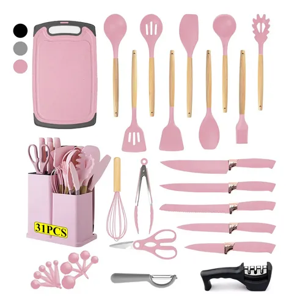

Guía de Compras
Hace 2 días
Mejores baterías de cocina si te acabas de mudar: Análisis Ekco 32 piezas
¿Te independizaste y tu cocina está vacía? Probamos el famoso set de 32 piezas de Ekco para ver si realmente vale la pena o si es puro marketing. Analizamos qué viene, la calidad del antiadherente y si durará más de un mes de uso intensivo.